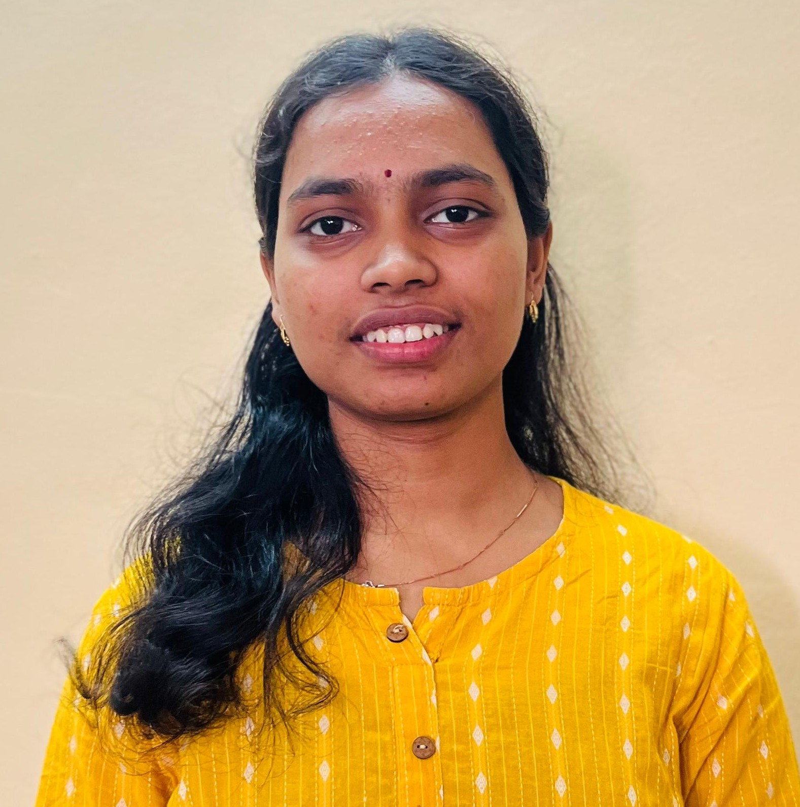

Pednekar Shruti Abhimanyu

Summary
Data Enthusiast to work with communities and take insightful trends and patterns.
Education
- BE.IT - A.C.Patil College of Engineering , Kharghar (2022-2025)
- Diploma in Computer Engineering - Yashwantrao Bhonsale Polytechnic ,Sawantwadi (2019-2022)
- SSS - Malgaon English School,Malgaon (2018-2019)
Internship
Build Application booking appointments for diagnostics
July-August 2024
- Developed an application enabling users to book diagnostic test appointments easily.
- Integrated frontend and backend for seamless user experience and functionality.
- Ensured robust database management for appointments, tests, and user details.
Skills
- Python
- SQL
- Stats for data analysis
- PowerBI
- Excel
Award and Certification
- Certification in Data Science and Analytics course - Oct-Dec(2024)
- Certification in Employability Skills
- Participation in Vision4Data hackathon
- Got first prize in Arm Wrestling
Other